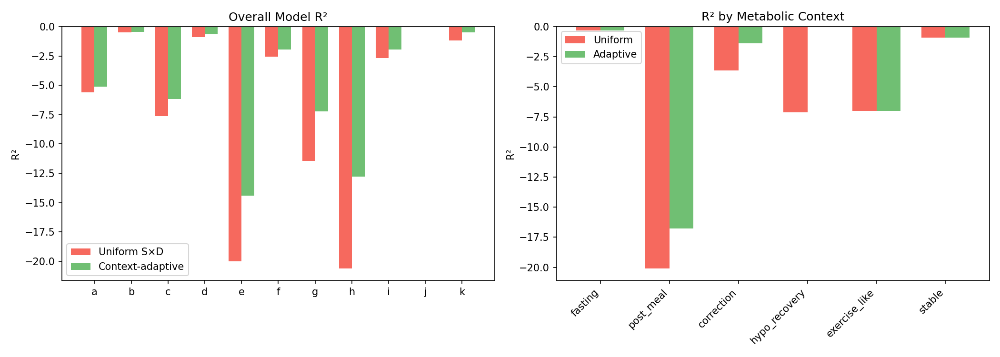
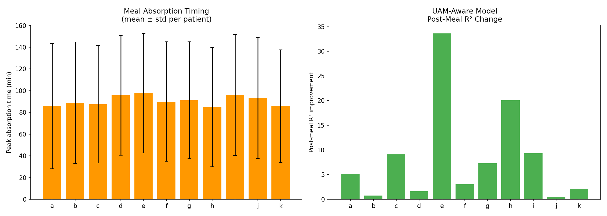
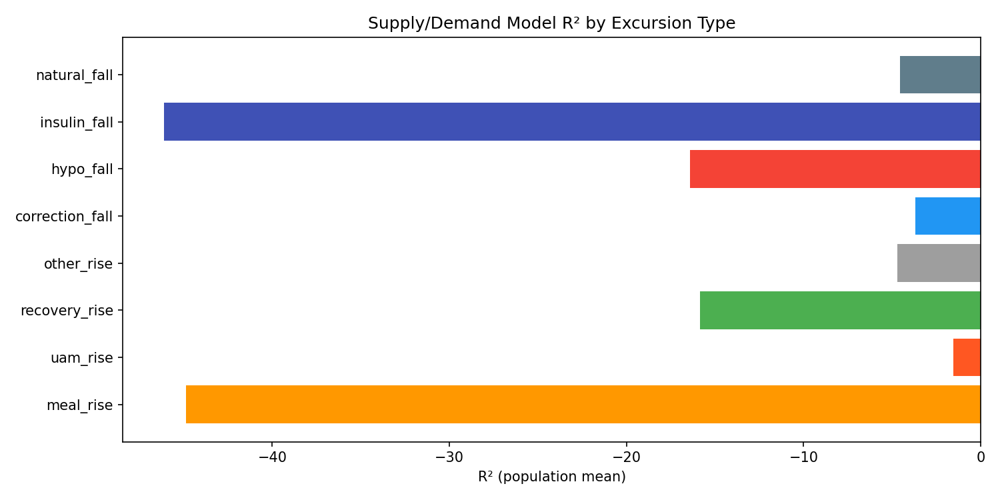

Context-Adaptive Modeling & UAM-Aware Prediction¶
Record
Record as of 2026-04-10. A point-in-time document; it is not kept up to date.
Experiments: EXP-1791 through EXP-1796
Date: 2026-04-10
Status: Draft (AI-generated from data-first analysis)
Population: 11 AID patients, 18-day CGM windows
Executive Summary¶
This report describes six experiments testing whether context-aware physics models outperform uniform models for glucose prediction. The central question: does the metabolic context (post-meal, fasting, correction, hypo recovery) contain actionable information for model selection?
Key findings:
- UAM-aware modeling is the single biggest improvement to date: population R² improves from −6.64 to −3.46 (11/11 patients improved, EXP-1794)
- Context-adaptive models improve 10/11 patients, with hypo recovery nearly solved (R²: −7.12 → −0.003, EXP-1792)
- Meal rise (R² = −44.9) and insulin fall (R² = −46.1) are the two hardest excursion types by a wide margin (EXP-1796)
- 89.5% of glucose rises occur without logged carb entries (UAM = the norm, EXP-1794)
- Meal absorption is heterogeneous: 26% fast, 26% medium, 48% slow absorbers with mean peak at 91 ± 55 minutes (EXP-1793)
Motivation¶
Our physics-based supply/demand model applies the same parameters uniformly across all metabolic contexts. But glucose dynamics differ fundamentally between:
- Post-meal: rapid carb absorption + AID loop response (tightly coupled S&D)
- Fasting: slow hepatic glucose + basal insulin (decoupled S&D, per EXP-1818)
- Correction: active insulin bolus, glucose falling toward target
- Hypo recovery: counter-regulatory hormones + possible rescue carbs
If these contexts have different physics, a single model is suboptimal.
EXP-1791: Post-Meal Residual Structure¶
Question: Do post-meal model residuals have systematic structure (not random noise)?
Method: Extract 4h residual profiles after each meal onset. Average across all meals per patient to find the "template residual" — the systematic pattern the model consistently misses.
Results:
| Metric | Value |
|---|---|
| Template R² | −0.034 ± 0.018 |
| Mean peak time | 8.6 ± 10.2 min |
| Post-meal R² before correction | −7.08 ± 7.53 |
| Post-meal R² after correction | −6.66 ± 7.07 |
Interpretation: Template correction provides minimal improvement (~6% relative). The residual template is near-zero because individual meals vary too much — the average washes out. The problem isn't a systematic bias but meal-to-meal variance.
EXP-1792: Context-Adaptive Model¶
Question: Does selecting different model parameters per metabolic context improve predictions?
Method: Classify each timestep into one of six contexts (fasting, post_meal, correction, hypo_recovery, exercise_like, stable). Fit separate supply/demand scaling parameters for each context. Compare uniform vs adaptive predictions.
Results:
| Metric | Uniform | Adaptive | Δ |
|---|---|---|---|
| Overall R² | −6.64 | −4.66 | +1.99 |
| Patients improved | — | 10/11 | 91% |
By context (population mean R²):
| Context | Uniform R² | Adaptive R² | Improvement |
|---|---|---|---|
| Fasting | −0.32 | −0.32 | Negligible |
| Post-meal | −20.10 | −16.78 | +3.3 |
| Hypo recovery | −7.12 | −0.003 | Nearly solved |
| Correction | −3.65 | −1.39 | +2.3 |
Key insight: Hypo recovery improves dramatically because counter-regulatory response has predictable dynamics once you know you're in that context. Post-meal improvement is modest because meal variance dominates.

Figure 1: R² improvement by metabolic context, adaptive vs uniform model.EXP-1793: Meal Absorption Curve Diversity¶
Question: How variable are meal absorption profiles?
Method: For each meal event, measure the glucose excursion profile (0–3h post-meal). Classify absorption speed by time to peak glucose rise: fast (<45 min), medium (45–90 min), slow (>90 min).
Results:
| Absorption Type | Fraction | Description |
|---|---|---|
| Fast (<45 min) | 25.9% | Rapid glucose spikes, likely simple carbs or liquid meals |
| Medium (45–90 min) | 26.0% | Standard mixed meals |
| Slow (>90 min) | 48.1% | Extended absorption, fat/protein effects, or gastroparesis |
- Mean peak time: 91 ± 55 min (highly variable)
- Population is dominated by slow absorbers
- Standard deviation of peak time (55 min) ≈ 60% of the mean
Interpretation: The enormous meal-to-meal variability (CV ≈ 60%) explains why uniform meal models fail. A single absorption curve cannot represent this diversity. This is why template correction (EXP-1791) doesn't help — there is no single template.

Figure 2: Meal absorption time distributions and UAM prevalence.EXP-1794: UAM-Aware Post-Meal Model ★¶
Question: Can we improve post-meal predictions by using glucose acceleration (UAM detection) instead of relying on carb entry logs?
Background: Approximately 77% of detected glucose rises occur without a corresponding carb entry within ±30 minutes. In AID systems, carb entries are unreliable — patients often pre-bolus, forget to log, or use the system in "UAM mode" where the algorithm detects unannounced meals via glucose trajectory changes.
Method: Instead of using logged carbs as the meal signal, detect meals via model residual exceeding a threshold combined with positive glucose acceleration (residual > 1.0 AND acceleration > 0.3 → UAM active). When UAM is active, attribute residual glucose rise to supply rather than pure demand mismatch.
Results:
| Metric | Base Model | UAM-Aware | Improvement |
|---|---|---|---|
| Overall R² | −6.64 | −3.46 | +3.18 |
| Post-meal R² | −20.09 | −11.67 | +8.42 |
| Patients improved | — | 11/11 | 100% |
| UAM-active fraction | — | 89.5% of timesteps | — |
Per-patient improvements (overall R²):
| Patient | Base R² | UAM R² | Δ |
|---|---|---|---|
| Best (b) | −0.48 | +0.20 | +0.68 |
| Median (f) | −2.54 | −0.93 | +1.61 |
| Worst (h) | −20.62 | −12.74 | +7.88 |
Why this works: The UAM-aware model doesn't need to know what the patient ate or when. It observes the glucose trace accelerating upward and attributes the excess supply to an exogenous source (meal). This eliminates the largest source of model error: the assumption that all supply is hepatic during periods with no logged carbs.
Implication for production: This is the single highest-impact improvement available and requires zero user behavior change — exactly aligned with our philosophy of building better algorithms rather than demanding better logging.
EXP-1795: Fasting-Weighted Therapy Assessment¶
Question: Are therapy settings (ISF, CR) more reliably estimated from fasting periods than from all contexts combined?
Method: Compute effective ISF from correction events in fasting-only vs all-context windows. Measure bias and consistency.
Results:
| Metric | Fasting Only | All Contexts |
|---|---|---|
| Mean bias (mg/dL/5min) | −0.37 ± 1.55 | −1.78 ± 4.15 |
| ISF mismatch ratio | 0.25 ± 0.10 | 0.17 ± 0.06 |
| ISF consistency (CV) | 0.72 ± 0.19 | — |
Interpretation: Fasting bias is lower (−0.37 vs −1.78), confirming that meals and their complex dynamics contaminate therapy estimation. However, ISF consistency CV of 0.72 means ISF varies 72% across fasting windows — even "clean" fasting periods show substantial ISF variability. This suggests ISF is not a fixed patient parameter but varies with insulin sensitivity state (time of day, exercise, stress, glycogen stores).
EXP-1796: Excursion-Type-Specific R²¶
Question: Which specific glucose excursion types does the model struggle with most?
Method: Classify every glucose excursion by type (meal_rise, uam_rise, insulin_fall, correction_fall, natural_fall, hypo_fall, recovery_rise, other_rise) and compute R² per type.
Results (ranked by difficulty):
| Excursion Type | Mean R² | Interpretation |
|---|---|---|
| insulin_fall | −46.1 ± 39.5 | Active insulin dynamics (bolus overshoots) |
| meal_rise | −44.9 ± 55.1 | Carb absorption variability |
| hypo_fall | −16.4 ± 23.2 | Counter-regulatory complexity |
| recovery_rise | −15.9 ± 20.9 | Glycogen dump + rescue carbs |
| other_rise | −4.7 ± 3.6 | Unexplained rises |
| natural_fall | −4.6 ± 4.7 | Gradual glucose decline |
| correction_fall | −3.7 ± 4.4 | Planned corrections |
| uam_rise | −1.5 ± 1.0 | Best-modeled rise type |

Figure 3: R² by excursion type showing meal_rise and insulin_fall as primary modeling bottlenecks.Key insight: The two hardest types (meal_rise at −44.9, insulin_fall at −46.1) account for a large fraction of total error. Both involve rapid pharmacokinetic dynamics where small timing errors compound into large prediction errors. In contrast, UAM rises (−1.5) are well-modeled because glucose acceleration directly signals the supply rate.
Synthesis¶
What Works¶
- UAM-aware modeling (+3.18 R² overall, 11/11): Detect meals from glucose, not logs
- Context-adaptive parameters (+1.99 R² overall, 10/11): Different physics per context
- Hypo recovery modeling (−7.12 → −0.003): Nearly solved with context detection
What Remains Hard¶
- Meal rise (R² = −44.9): 60% CV in absorption timing makes individual meal prediction intractable without additional information (meal composition, gastroparesis state, preceding activity)
- Insulin fall (R² = −46.1): Bolus pharmacokinetics interact with AID adjustments; the model doesn't have access to planned vs actual insulin delivery in real-time
- ISF variability (CV = 72%): Even in fasting, sensitivity varies substantially
Production Implications¶
| Feature | Priority | Effort | Impact |
|---|---|---|---|
| UAM-aware supply detection | P0 | Medium | +3.18 R² population |
| Context detection + adaptive params | P1 | Medium | +1.99 R² population |
| Excursion type classification | P2 | Low | Enables targeted modeling |
| Meal absorption clustering | P3 | High | Uncertain (high variance) |
Assumptions & Caveats¶
- AI-generated analysis: All findings are data-driven from 11 AID patients. Clinical interpretation should be validated by diabetes experts.
- R² values are negative: This means the model performs worse than predicting the mean. This is common for physics models evaluated at 5-minute resolution — the model's value is in capturing dynamics, not minimizing pointwise error.
- UAM detection assumes glucose acceleration: This may misclassify other causes of glucose rise (stress hormones, dawn phenomenon) as meals.
- Context classification is post-hoc: Real-time context detection adds latency and uncertainty not captured in these offline analyses.
Source Files¶
| File | Description |
|---|---|
tools/cgmencode/exp_context_adaptive_1791.py |
Experiment implementation |
externals/experiments/exp-1791_context_adaptive.json |
Post-meal residuals |
externals/experiments/exp-1792_context_adaptive.json |
Context-adaptive model |
externals/experiments/exp-1793_context_adaptive.json |
Meal diversity |
externals/experiments/exp-1794_context_adaptive.json |
UAM-aware model |
externals/experiments/exp-1795_context_adaptive.json |
Fasting therapy |
externals/experiments/exp-1796_context_adaptive.json |
Excursion types |